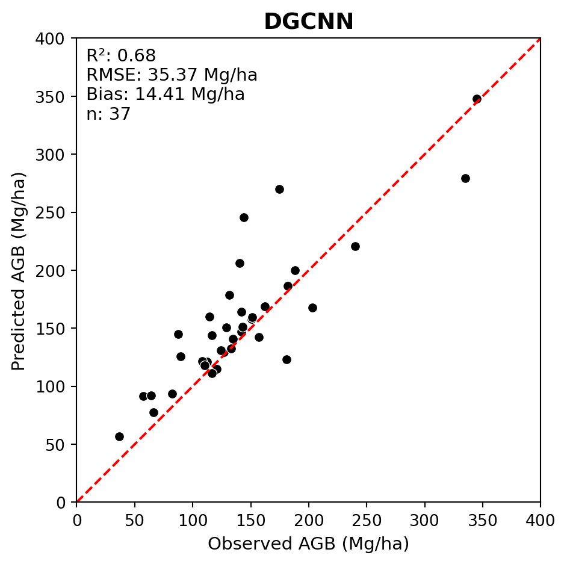
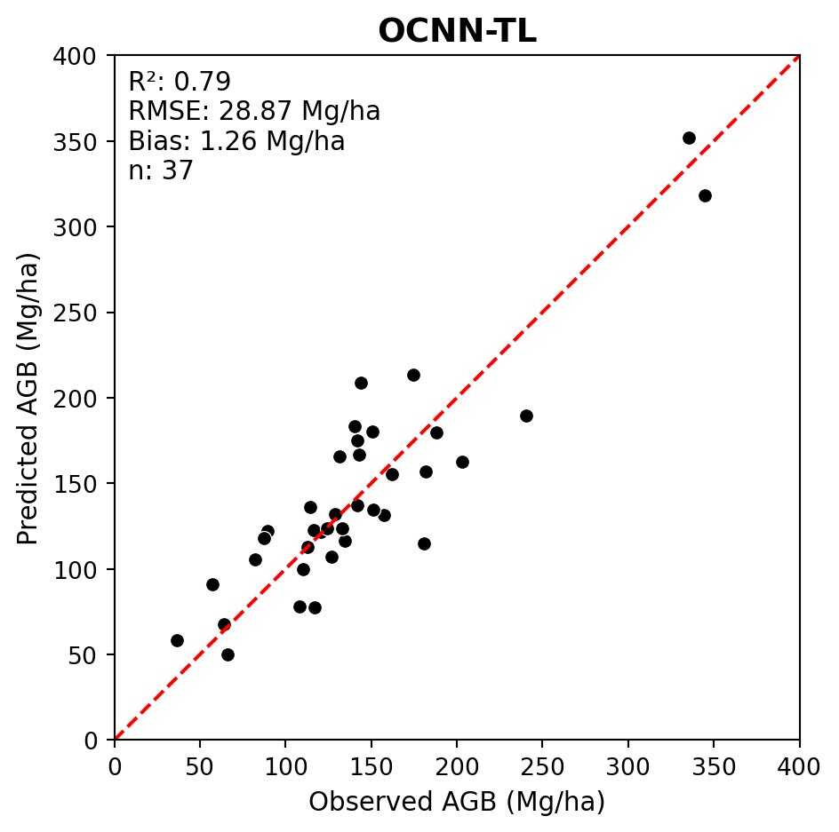

Evaluation of Deep Learning Derived Forest Inventory Predictions
This section details how to interpret the results from the final test run and how to use the trained model effectively.
Evaluating Deep Learning Predictions
Evaluation goes beyond just logging the final loss. It requires inspecting the raw outputs and ensuring they make sense in the context of the problem.
Prediction vs. Target: The core of evaluation is comparing the model’s output (raw logits or predicted values) against the ground truth. This is handled within the on_test_epoch_end hook, where raw predictions are aggregated.
Post-processing: For classification, raw logits must be converted to class indices (e.g., using np.argmax(all_pred, axis=1)) before calculating metrics like accuracy or confusion matrices.
Key Evaluation Metrics
The choice of metric depends entirely on the task type, as implemented in your on_test_epoch_end hook:
Classification Metrics
Instance Accuracy: The proportion of correctly classified individual samples (points or objects).
Class Accuracy (Mean Class Accuracy): The average accuracy across all possible classes. This is vital for imbalanced datasets, as it prevents the model from being judged solely by its performance on the most frequent class.
Confusion Matrix: A table that visualizes the performance of the classification model, where each row represents the instances in an actual class, and each column represents the instances in a predicted class.
Regression Metrics
Root Mean Squared Error (RMSE): Measures the average magnitude of the errors. Since the errors are squared before being averaged, RMSE gives a relatively high weight to large errors.
R-squared (\(R^2\)): Represents the proportion of the variance for a dependent variable that’s explained by the independent variable(s) in a regression model. \(R^2\) ranges from \(0\) to \(1\), with \(1\) being a perfect fit.
Prediction Results and Visualization
Visualizing the results is often more informative than numerical logs alone.
Qualitative Visualization: For point cloud applications, visualize the point cloud data colored by the model’s predicted label versus the true label to identify spatial regions where the model struggles.
The generated predictions are also uploaded to GitHub:
Forest aboveground biomass (AGB) regression is a more complex modeling task compared to classifying dominant tree species.
We begin by evaluating the DGCNN model trained with hyperparameters that achieved the best validation performance.
The code below includes a function for loading regression predictions and converting them from Z-score to the original scale.
Code
# Define a funmction to read def load_reg_pred(obs_pred_fpath, labels_df, mean_agb, sd_agb):# Read predictions and make plot ID uppercase df = (pd.read_csv(obs_pred_fpath) .assign(plot_id=lambda df: df['plot_id'].str.upper()))# Drop Z-scored AGB labels from dataframes df.pop('total_agb_z')# Convert predicted Z-scores back to original AGB values (tonnes per hectare) df['agb_mg_ha_pred'] = convert_from_z_score(z_vals=df['total_agb_z_pred'], sd=sd_agb, mean=mean_agb) df = df.merge(labels_df, on='plot_id', how='left')return df
Load observed and predicted AGB values.
Previously, we generated predictions using the trained model on the test dataset, which are stored in the predictions.csv file within the model checkpoint directory (src/pretrained_ckpt/...).
We also need to load the observed AGB values from labels.csv.
Below we generate an observed vs. predicted scatterplot including regression metrics for DGCNN.
We can see that the model fit was quite poor.
Code
LABELS_FPATH =r'data/petawawa/labels.csv'dgcnn_pred_fpath =r'src/pretrained_ckpt/peta_reg_dgcnn_bs8_lre3/checkpoints/predictions.csv'# Read labelslabels_df = (pd.read_csv(LABELS_FPATH) .assign(plot_id=lambda df: df['plot_id'].str.upper()) .rename(columns={'total_agb_mg_ha': 'agb_mg_ha_obs'}))# Set mean and standard deviation for Z-score conversionmean_agb = labels_df['agb_mg_ha_obs'].mean()sd_agb = labels_df['agb_mg_ha_obs'].std()# Load DGCNN predictionsdgcnn_obs_pred_df = load_reg_pred(dgcnn_pred_fpath, labels_df, mean_agb, sd_agb)# Plot regression resultsplot_regression(obs=dgcnn_obs_pred_df['agb_mg_ha_obs'], pred=dgcnn_obs_pred_df['agb_mg_ha_pred'], ax_lims=(0, 400), title='DGCNN', fig_out_fpath='images/dgcnn_regression_plot.jpg', hide=False)

Improving DNN Performance
Deep neural networks (DNNs) often have poor model fit when trained out-of-the-box on small datasets. Recall that most prominent DNNs are typically trained using millions of samples.
In situations like the Petawawa dataset, with only n = 249 samples, there are a few steps that can be taken to achieve improved performance.
First, we can try a different DNN architecture that may be better suited to forest AGB regression. Some research has indicated that 3-D CNNs perform better for AGB estimation. For example, Oehmcke et al. (2024) found that the Minkowski Engine sparse 3-D CNN outperformed point-based DNNs such as PointNet and KPConv for AGB regression.
Following this logic, we will evaluate the effectiveness of a similar Octree-CNN (OCNN) model that was implemented by Seely et al. (2023).
Below we evaluate the performance of OCNN on the PRF dataset.
Conventionally, DNN model weights are randomly initialized, which means the model begins training with no prior knowledge. TL involves initializing the model weights using a pre-trained OCNN model that was trained on a similar, larger dataset.
In this case, we will use a version of OCNN that was pretrained on the New Brunswick forest inventory dataset from Seely et al. (2023). This pretrained model checkpoint is stored at src/pretrained_ckpt/ocnn_nbk_idXM6D.ckpt.
Below we evaluate the transfer learning OCNN (OCNN-TL) performance on the PRF dataset.
We can see that transfer learning further improved the model fit.
Code
# Different model checkpointsocnn_tl_pred_fpath =r'src/pretrained_ckpt/peta_reg_ocnn_bs16_lre4_ckpt_ocnn_nbk_idXM6D/checkpoints/predictions.csv'ocnn_tl_obs_pred_df = load_reg_pred(ocnn_tl_pred_fpath, labels_df, mean_agb, sd_agb)plot_regression(obs=ocnn_tl_obs_pred_df['agb_mg_ha_obs'], pred=ocnn_tl_obs_pred_df['agb_mg_ha_pred'], ax_lims=(0, 400), title='OCNN-TL', fig_out_fpath='images/ocnn_tl_regression_plot.jpg', hide=False)

Building on the poor DGCNN performance, we explored two methods of improving DNN model performance for AGB estimation:
Using a different DNN architecture (OCNN)
Applying transfer learning (OCNN-TL)
Due to the high degree of flexibility in DNN architectures and training strategies, there are many other potential avenues for improving model performance that can be explored. These include, but are not limited to:
Hyperparameter tuning
Data augmentation
Ensemble modelling
…
Safonova et al. 2023 provides additional strategies for improving DNN performance for remote sensing applications in scenarios with small datasets.
Compare results to Random Forest using LiDAR Metrics
While it is useful to compare the performance of different deep neural networks, it is also important to benchmark DNN results against conventional machine learning approaches for EFI that rely on LiDAR metrics. The most common approach is to use Random Forest (RF) models trained using plot-level LiDAR height metrics as predictors.
Below we compare the best DNN results to RF results for both tree species classification and AGB regression.
Overall, we can see that the DNN models implemented in this tutorial provided a modest improvement compared to RF models trained using LiDAR metrics. It is possible that this improvement could have been further increased with additional DNN hyperparameter tuning and training strategies.
It is important to note the computational cost of training DNNs and the complexity of the code and overall workflow compared to RF. In some cases, the improvement in performance may not justify the added complexity of DNNs compared to RF for EFI applications.